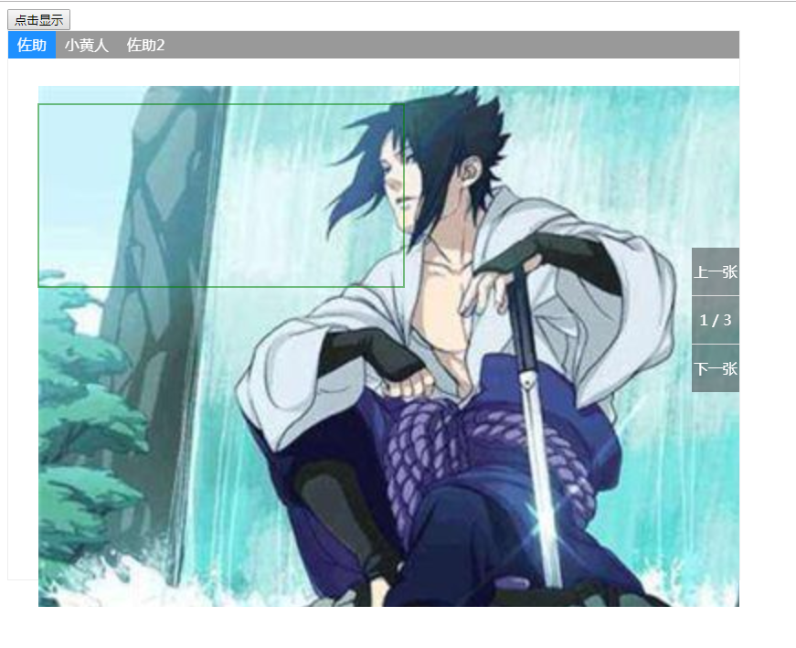

ImagePicker 插件的使用文档
- ImagePicker 是用来根据给定坐标及宽高来显示对应图片的位置，并可以对图片进行操作，例如放大缩小拖拽，用于易豹项目报关时自动生成报关单与原始报关单进行对比
- ImagePicker 目前暂未加上旋转，截图等操作，后期根据业务需求与时间进行补充
- 效果如下 
使用方法
- 1.引入imagePicker
- 2.使用imagePicker
let imagePicker = new imagePicker({ imgSrc: [ { src: 'http://img18.3lian.com/d/file/201711/23/d667b347e689abd76539842566e90bdc.png', title: 'Taylor' }, { src: 'https://timgsa.baidu.com/timg?image&quality=80&size=b9999_10000&sec=1536905408593&di=060166ae107dcfa640ce236a13bdcf38&imgtype=0&src=http%3A%2F%2Fwww.365wellbet.com%2Fwp-content%2Fuploads%2F2017%2F07%2F1365991084917.jpg', title: 'Avril' } ] }); imagePicker.selected([{ posX: 0, posY: 10, lineW: 200, lineH: 100, flag: 'http://img18.3lian.com/d/file/201711/23/d667b347e689abd76539842566e90bdc.png', state: 1 }])
相关参数
| 参数名 | 说明 | 类型 | 默认值 |
|---|---|---|---|
| width | 容器宽度 | number | 800 |
| height | 容器高度 | number | 600 |
| el | 目标元素 | string | 'body' |
| imgX | 图片在画布显示位置，左上角x轴 | number | 0 |
| imgY | 图片在画布显示位置，左上角y轴 | number | 0 |
| imgSrc | 要展示的图片 | array | - |
| showMoveBtn | 左侧导航 | boolean | false |
| loop | 左侧导航循环 | boolean | false |
| showTopBar | 上侧导航 | boolean | true |
方法
- selected(array) 传入坐标信息数组
传入参数详解
| 参数名 | 说明 | 类型 |
|---|---|---|
| posX | 坐标轴x轴位置 | number |
| posY | 坐标轴y轴位置 | number |
| lineW | 线框的宽度 | number |
| lineH | 线框的高度 | number |
| state | 线框的颜色 | number |
| flag | 线框在哪张图片显示的标志 | string |